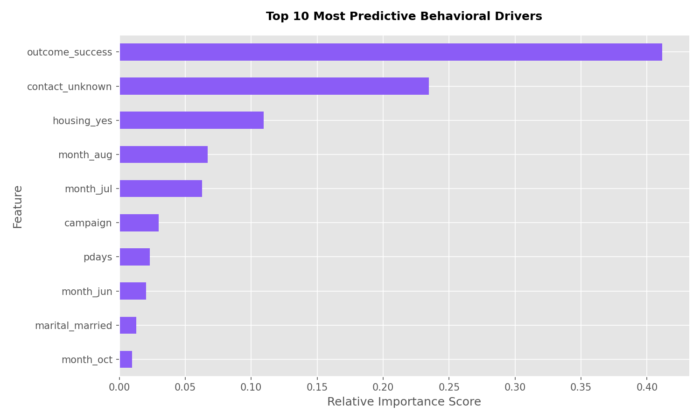
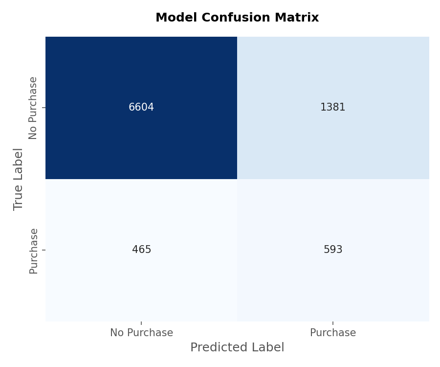
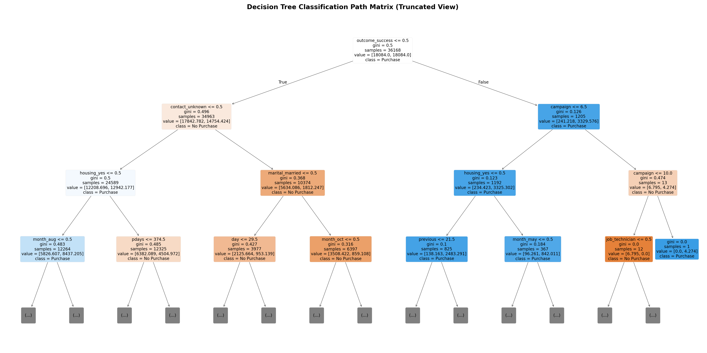

Customer Purchase Prediction Pipeline
PRODIGY TECH TASK 3
Dataset Volumetrics
45,211 Records
Tree Depth Strategy
Max Depth = 5
Class Management
Balanced Weights
Data Leakage Guard
Duration Dropped
📉 Model Architecture & Diagnostic Insights
1. Key Behavioral Features
Isolating demographic attributes and interaction variables to identify the strongest predictors of conversion.

2. Model Evaluation Matrix
Tracking correct classifications vs misclassifications to assess performance across imbalanced target classes.

3. Extracted Decision Boundary Tree Rules Layout
Mapping the conditional rules learned by the classifier from the root node down to the classification leaves. (Showing up to depth 3 for structural legibility)
